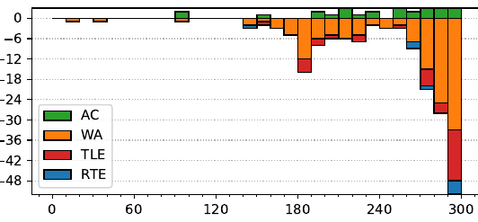

47th ICPC World Finals
Problem authors: Paul Wild and Martin Kacer
Solved by 26 teams.
First solved after 90 minutes.
Shortest team solution: 3662 bytes.
Shortest judge solution: 2240 bytes.

Once we have made at least one horizontal and at least one vertical move, the tiles will always be flush in one of the corners of the grid. At this point, we are no longer able to change the outline the tiles to any other shape, other than changing which of the four corners the tiles are anchored in. The only change possible from here is to permute the labels by cycling through these four configurations using the moves right-down-left-up repeatedly. One repetition of these four moves induces a permutation on the tiles, and the configurations reachable from here are determined by the powers of that permutation, plus some extra moves if we want to anchor in another corner.
In total, the reachable configurations are 1) some configurations reachable in 0 or 1 steps that are not anchored in a corner, and 2) some configurations that are all reachable along at most four long cycles that are each determined by a permutation.
If we fix one of these permutations, we are now left with a string theory problem: Given strings s and t, and a permutation p, is there some number n such that after n-fold application of the permutation p to the string s we get the string t?
To solve this problem, we decompose the permutation into disjoint cycles, and look at each cycle independently. Using a linear-time string matching algorithm we either find that no solution for that cycle exists, or obtain a requirement in the form of a linear congruence n ≡ a (mod m).
Finally, we need to check whether the system of linear congruences has a solution. This is a somewhat standard application of the Chinese Remainder Theorem, but the solution may potentially be huge. Rather than constructing it directly, one can show that it is enough to check each pair of congruences for consistence. As there are only O(|s|) distinct moduli, this too can be done in linear time.